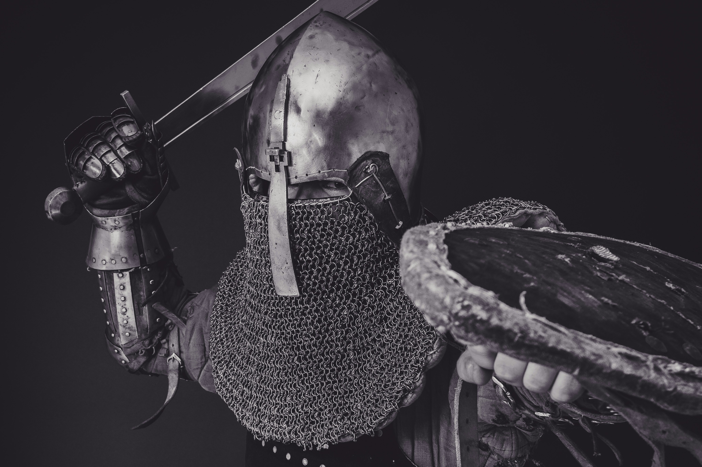

Velkommen
introduksjon
Mitt navn er Thomas og jeg går på kodeloftet. Dette er min første nettside, og er en test for å se hvordan HTML fungerer
Om meg


Jeg er fra Bergen, og har alltid bod her. Jeg er 19 år gammel og liker å spille DND med vennene mine i helgene.
Favoritt spill
- Ghost of tsushima
- Red dead redemtion
- Baldurs gate 3 

Ghost of tsushima er et spill om en samurai som legger fra seg sin ære, for å kunne redde folket sitt fra den mongolske invasjonen.
Red dead redemtion handler om en gjeng cowboys som kjemper for penger, hevn og frihet
Baldurs gate 3 er et spill som tar sterk inspirasjon fra DND for å gi spillere et unikt eventyr i en verden full av blandt annet magi, monstre og demoner
Om mine prosjekter
Dette er mitt første av flere prosjekter, og ble laget i stackblitz